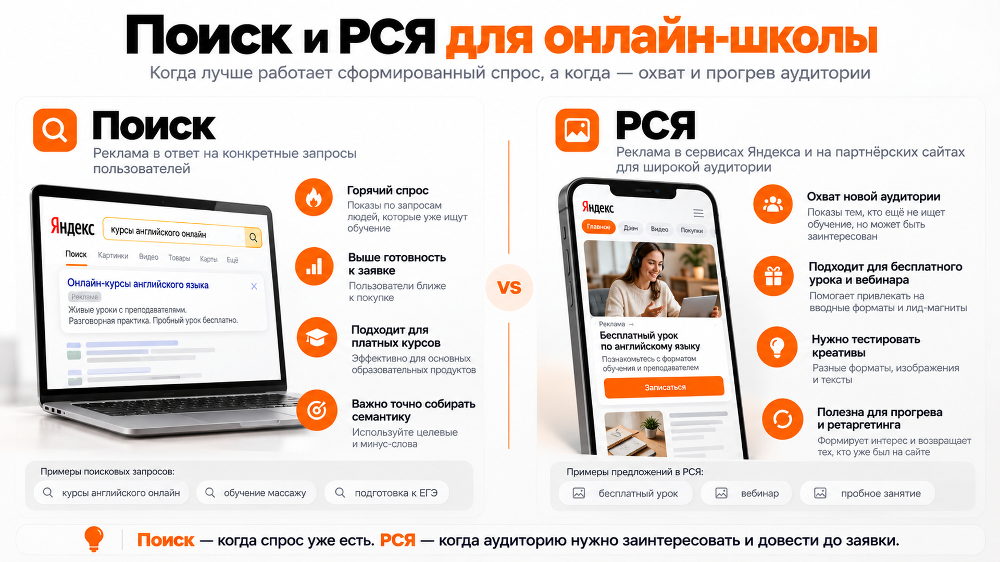
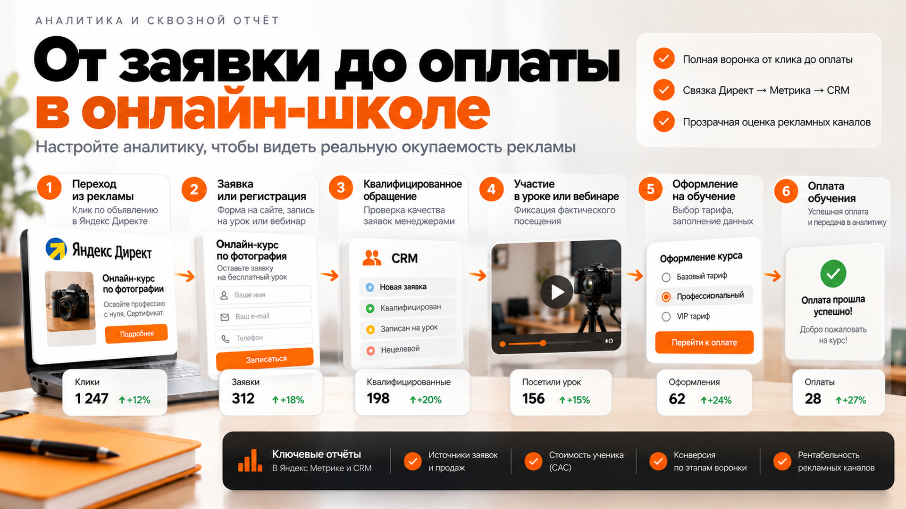

Блог о платном трафике
Яндекс Директ для онлайн-школы: как получать заявки и продажи
Яндекс Директ позволяет онлайн-школам привлекать учеников на платные курсы, бесплатные уроки, вебинары и профессиональное обучение. Но эффективность рекламы определяется не только стоимостью заявки. Важно, сколько потенциальных учеников в итоге оплачивают обучение.
Главный принцип: сначала выбрать подходящую воронку продаж, затем настроить рекламу под конкретную аудиторию и отслеживать результат вплоть до оплаты.
Я занимаюсь рекламой с 2014 года. Среди моих образовательных проектов были фотошкола, школа массажа, курсы йоги, обучение кондитеров и другие онлайн-продукты. В этой статье разберу, какие рекламные инструменты использовались, сколько стоили заявки и какие решения помогали улучшить результат.
Когда Яндекс Директ подходит онлайн-школе
Лучше всего поисковая реклама работает там, где люди уже ищут конкретное обучение: курсы английского языка, подготовку к ЕГЭ, освоение профессии или получение определённого навыка.
Для образовательных продуктов без сформированного спроса приходится решать другую задачу: сначала заинтересовать аудиторию предложением, а затем довести до регистрации.
Подход зависит от направления.
| Направление | Что важно в рекламе |
|---|---|
| Профессиональное образование | Новая специальность, программа, документ об обучении, практические навыки |
| Детские онлайн-школы | Возраст ребёнка, результат занятий, доверие родителей |
| Подготовка к экзаменам | Конкретный предмет, формат занятий, сроки подготовки |
| Хобби и творчество | Примеры результатов, преподаватель, возможность попробовать бесплатно |
| Узкие экспертные курсы | Объяснение ценности продукта и знакомство с экспертом |
Например, для обучения массажу работает конкретное предложение профессионального курса, а для йоги или творческих направлений подходящим первым шагом может стать бесплатный видеоурок.
Какую воронку выбрать для продвижения онлайн-школы
Существуют четыре основные модели привлечения учеников.
Прямая заявка на платный курс
Подходит, когда человек уже понимает, какую программу ищет, и готов сравнивать школы.
Схема: рекламное объявление → страница курса → заявка → консультация → оплата.
На посадочной странице должны быть программа, стоимость, длительность, формат занятий и информация о преподавателях.
Регистрация на бесплатный урок
Подходит для продуктов, которые желательно попробовать перед покупкой.
Схема: реклама → бесплатный урок → знакомство с продуктом → предложение платного обучения.
В моём кейсе курсов йоги Сурья Намаскар использовалась именно такая модель. Результат за март 2023 года составил 447 целевых визитов по 96,49 ₽ при KPI 300 ₽.
Бесплатный урок позволял привлекать заинтересованных людей без требования сразу оплачивать программу.
Регистрация на вебинар
Подходит для сложных образовательных продуктов, когда перед покупкой требуется показать экспертность преподавателя.
Схема: реклама → регистрация → посещение вебинара → предложение курса → оплата.
В проекте обучения кондитеров удалось снизить стоимость регистрации с 68 до 31 ₽.
Однако сама по себе дешёвая регистрация не гарантирует продаж. Нужно отслеживать посещаемость вебинара и последующие покупки.
Telegram-бот или автоворонка
Подходит для продуктов с длительным выбором и последовательным знакомством с экспертом.
Схема: рекламный переход → запуск бота → серия полезных материалов → предложение обучения.
В кейсе продвижения обучения Васту удалось получить 201 запуск Telegram-бота по средней стоимости 203 ₽.
Важный нюанс: переход на страницу ещё не означает запуск бота. Поэтому отслеживать желательно именно факт начала взаимодействия с ботом.
Как выбрать: если спрос уже сформирован, тестируйте прямую заявку. Если пользователю нужно познакомиться с продуктом, используйте бесплатный урок или вебинар. Если решение принимается долго, рассмотрите автоворонку.
Поиск или РСЯ: что эффективнее для онлайн-школы

Поиск и Рекламная сеть Яндекса решают разные задачи. Универсального победителя нет: эффективность зависит от образовательного продукта, предложения и этапа воронки.
Поиск Яндекса
На Поиске особенно интересны запросы с выраженным намерением учиться:
- «курсы массажа москва»;
- «онлайн школа английского языка»;
- «обучение на фотографа»;
- «подготовка к егэ математика онлайн».
Пользователь уже выбирает обучение, поэтому объявление должно отвечать на конкретный запрос и вести на соответствующую страницу.
Главная ошибка в работе с семантикой: смешивать желание получить бесплатную информацию и намерение купить обучение.
Например, запрос «рецепт шоколадного торта» не равнозначен запросу «курсы кондитера». Первый человек ищет рецепт, второй рассматривает обучение.
В проекте кондитерской школы мы столкнулись именно с этим. Широкие запросы по рецептам приводили регистрации, но качество аудитории оказалось недостаточным. После переработки семантики акцент сместился на людей, заинтересованных в обучении профессии.
РСЯ
РСЯ позволяет показывать объявления людям, которые могут заинтересоваться курсом, даже если прямо сейчас не ищут его в поисковой строке.
Особенно важны три элемента:
- Предложение: что человек получит после обучения.
- Креатив: кому предназначен курс и почему стоит обратить внимание.
- Первый шаг: какое простое действие предлагается совершить.
Например, вместо абстрактного «Онлайн-курсы фотографии» можно использовать конкретное предложение бесплатного урока с демонстрацией результата.
РСЯ может быть полезна для массовых онлайн-курсов, бесплатных уроков, вебинаров и ретаргетинга. Но её не стоит оценивать исключительно по дешёвым кликам.
Нужно ли разделять Поиск и РСЯ
Не всегда.
В актуальном Яндекс Директе Единая перфоманс-кампания позволяет управлять разными местами показа в рамках одного инструмента.
Разделение имеет смысл, когда требуется отдельное управление бюджетами, целями, объявлениями или когда статистика подтверждает существенную разницу в эффективности.
При ограниченном бюджете чрезмерное дробление кампаний может мешать накоплению данных для автоматических стратегий.
Как правильно выстроить структуру рекламных кампаний
Структура должна одновременно решать две задачи: позволять анализировать результат по направлениям и обеспечивать алгоритмы достаточным количеством конверсий.
Для школы с несколькими продуктами сначала стоит разделить предложения по экономике, целевой аудитории и посадочным страницам.
Однако создавать отдельную кампанию на каждую небольшую группу ключевых слов необязательно.
В кейсе масштабирования фотошколы первоначальная структура была чрезмерно раздроблена. После укрупнения кампаний и использования нескольких источников трафика удалось увеличить объём регистраций, сохранив приемлемую цену.
В другом проекте, школе массажа, эффективнее оказалось разделить брендовый спрос, общие запросы, отдельные курсы и ретаргетинг.
Вывод: структуру нужно выбирать по объёму конверсий и экономике направлений, а не по количеству ключевых слов.
Какой должна быть посадочная страница онлайн-школы
Даже качественно настроенная реклама не компенсирует непонятное предложение на сайте.
Если человек ищет конкретные курсы массажа, ему нужна страница соответствующего обучения, а не каталог всех образовательных программ.
На эффективной посадочной странице желательно показать:
- Название курса и целевую аудиторию.
- Конкретный результат обучения.
- Программу и продолжительность.
- Преподавателей и их квалификацию.
- Формат обучения, расписание и стоимость.
- Примеры работ учеников, отзывы или другие доказательства.
- Понятную форму записи либо предложение первого шага.
Для бесплатного урока посадочная страница может быть значительно короче, чем для дорогой профессиональной программы.
В проекте Сурья Намаскар использовался компактный лендинг с одним главным предложением: получить бесплатный видеоурок.
Практический вывод: чем меньше действий нужно пользователю для понимания предложения, тем проще ему принять решение. При этом важную информацию о платном продукте скрывать не следует.
Сколько стоит заявка на обучение из Яндекс Директа
Единой рыночной цены заявки для онлайн-школ не существует. Стоимость зависит от тематики, конкуренции, региона, продукта и того, какое действие считается лидом.
Ниже результаты моих рекламных проектов за соответствующие периоды.
| Проект | Результат | Стоимость |
|---|---|---|
| Фотошкола, 2022 | 5794 регистрации за 3 месяца | 126 ₽ |
| Школа массажа, Москва, 2023 | 402 заявки за месяц | 819 ₽ |
| Онлайн-школа йоги, 2023 | 447 целевых визитов на бесплатный урок | 96 ₽ |
| Кондитерская школа, 2022 | Регистрация на вебинар | 31 ₽ |
| Обучение Васту | 201 запуск Telegram-бота | 203 ₽ |
Это исторические результаты конкретных проектов, а не прогноз стоимости рекламы на сегодняшний день.
Также важно учитывать, что в таблице сравниваются разные целевые действия. Регистрация на бесплатное занятие и квалифицированная заявка на дорогой профессиональный курс имеют разную коммерческую ценность.
Что помогло получить эти результаты
Фотошкола. Укрупнение структуры кампаний, работа с автоматическими стратегиями и использование разных источников трафика. Средняя стоимость регистрации за три месяца составила 126 ₽ вместо прежних 350 ₽ и выше.
Школа массажа. Разделение спроса, ретаргетинг и перераспределение бюджета. Ретаргетинговые кампании давали заявки по 397‑566 ₽, а общая средняя стоимость составила 819 ₽ против прежних примерно 2000 ₽.
Курсы йоги. Простая посадочная страница, одна основная цель и отсутствие постоянных изменений стратегии в период обучения.
Обучение кондитеров. Отказ от дешёвого, но недостаточно целевого трафика по рецептам в пользу аудитории, заинтересованной в профессии.
Именно эти различия важнее попытки найти среднюю стоимость лида для всего рынка онлайн-образования.
Как рассчитать бюджет на рекламу онлайн-школы
Начинать расчёт лучше не с предполагаемой стоимости клика, а с допустимых расходов на привлечение одного платящего ученика.
Формула:
Допустимый CPL = допустимый CAC × конверсия заявки в оплату.
Где CPL - стоимость заявки, а CAC - стоимость привлечения нового клиента.
Пример расчёта
Допустим, онлайн-школа планирует привлекать учеников через бесплатный вебинар.
Исходные условия:
- Рекламный бюджет: 120 000 ₽.
- Прогнозная стоимость регистрации: 600 ₽.
- Доля зарегистрированных, посетивших вебинар: 50%.
- Конверсия участников вебинара в оплату: 10%.
Получаем следующую воронку:
| Этап | Результат |
|---|---|
| Рекламный бюджет | 120 000 ₽ |
| Регистрации | 200 |
| Посетили вебинар | 100 |
| Купили обучение | 10 |
| Стоимость ученика (CAC) | 12 000 ₽ |
Если допустимая стоимость привлечения ученика составляет 12 000 ₽, а 5% регистраций заканчиваются оплатой, максимально допустимый CPL равен 600 ₽.
Все показатели в этом примере условные. Это иллюстрация расчёта, а не статистика рынка.
При изменении посещаемости вебинара или конверсии в оплату экономика может существенно ухудшиться даже при неизменной стоимости регистрации.
Поэтому рекламный бюджет и целевой CPL нужно рассчитывать по фактической воронке конкретной школы.
Как настроить аналитику от заявки до оплаты курса

Для онлайн-школы недостаточно отслеживать только отправку формы в Яндекс Метрике.
Рекомендую различать несколько этапов:
- Переход из рекламного объявления.
- Регистрация или заявка.
- Квалифицированное обращение.
- Запись на занятие или вебинар.
- Фактическое посещение.
- Оплата образовательной программы.
Эти события позволяют определить, на каком этапе школа теряет потенциальных клиентов.
Например, если реклама приносит много регистраций на вебинар, но до эфира доходит лишь небольшая часть пользователей, улучшение посадочной страницы не обязательно решит проблему. Стоит проверить напоминания, расписание и качество аудитории.
Как связать Директ с CRM
В Яндекс Метрику можно передавать информацию о квалифицированных заявках, сделках и оплатах из CRM.
Для связи действий пользователя с визитами рекомендуется сохранять ClientID Метрики. Также поддерживаются другие способы сопоставления.
Это позволяет оценивать рекламу не только по заявкам, но и по продажам, а при достаточном объёме данных использовать более глубокие конверсии для оптимизации.
Подробнее: официальная инструкция по передаче данных из CRM.
На какую цель оптимизировать рекламу онлайн-школы
Основной ориентир - самое глубокое полезное действие, по которому достаточно статистики для работы стратегии.
Если продаж немного, а заявки поступают регулярно, оптимизация исключительно по оплатам может оказаться нестабильной.
В таком случае на первом этапе можно использовать подтверждённые регистрации или квалифицированные обращения. По мере накопления данных - проверять возможность оптимизации по более глубоким событиям.
При этом клик по кнопке, просмотр страницы и реальная заявка не должны считаться равнозначными бизнес-результатами.
Почему реклама онлайн-школы может не приносить продажи
На практике чаще всего встречаются следующие проблемы.
| Проблема | Что проверить |
|---|---|
| Много дешёвых, но нецелевых заявок | Семантику, объявления и качество аудитории |
| Есть клики, но мало регистраций | Оффер, посадочную страницу, форму |
| Есть регистрации, но мало участников вебинара | Напоминания, время проведения, мотивацию |
| Есть участники, но нет покупок | Продукт, презентацию, цену и работу продаж |
| РСЯ расходует бюджет без результата | Креативы, аудитории, места показа, цели |
| Стратегии работают нестабильно | Объём конверсий и частоту изменений настроек |
Одна из распространённых ошибок - пытаться решить любую проблему изменением рекламной стратегии.
Если пользователь не понимает ценность курса, снижение стоимости клика само по себе не увеличит продажи.
И наоборот: хороший продукт и сайт не компенсируют рекламу, привлекающую нерелевантную аудиторию.
С чего начать запуск Яндекс Директа для онлайн-школы
Оптимальная последовательность подготовки:
- Определить экономику курса. Средний чек, маржинальность, допустимый CAC, конверсию заявки в продажу.
- Выбрать воронку. Прямая заявка, бесплатный урок, вебинар или автоворонка.
- Подготовить посадочную страницу. Убедиться, что предложение соответствует аудитории и объявлениям.
- Настроить аналитику. Фиксировать заявки, их качество и последующие продажи.
- Запустить рекламу и накопить статистику. Оценивать не только CPL, но и конверсию в оплату.
После появления данных можно перераспределять бюджет между источниками, проверять гипотезы и масштабировать результативные связки.
Частые вопросы
Можно ли продвигать онлайн-школу только через Поиск?
Да, если есть достаточный объём подходящих коммерческих запросов и экономика рекламы сходится. Для расширения охвата можно дополнительно тестировать РСЯ.
Что лучше рекламировать: платный курс или бесплатный урок?
Если аудитория уже готова выбирать обучение, логично тестировать прямую заявку. Если продукт сложный или требует знакомства с преподавателем, бесплатный урок может оказаться более подходящим первым шагом.
Почему дешёвые заявки не превращаются в продажи?
Часто причина в несоответствии аудитории продукту. Пользователь может интересоваться бесплатным материалом, но не собирается покупать обучение. Кроме того, результат зависит от воронки и работы отдела продаж.
Как определить допустимую стоимость заявки?
Умножить допустимую стоимость привлечения одного ученика на фактическую конверсию заявки в оплату. Например, при допустимом CAC 10 000 ₽ и конверсии 5% допустимый CPL составляет 500 ₽.
Нужно ли передавать продажи из CRM в Яндекс Директ?
Желательно, если обучение продаётся после консультации, вебинара или нескольких контактов. Без данных CRM сложно оценить реальную стоимость ученика и окупаемость рекламного трафика.
Настройка и ведение Яндекс Директа для онлайн-школы
Я занимаюсь контекстной рекламой с 2014 года. Среди моих проектов - онлайн-фотошколы, профессиональное обучение массажу, курсы йоги и другие образовательные направления.
Помогаю выбрать рекламную воронку, настроить кампании, связать Метрику с заявками и продажами, определить экономику привлечения учеников.
Стоимость ведения рекламы - от 30 000 ₽ в месяц.
Посмотреть другие кейсы и связаться со мной можно на сайте naklikay.ru.